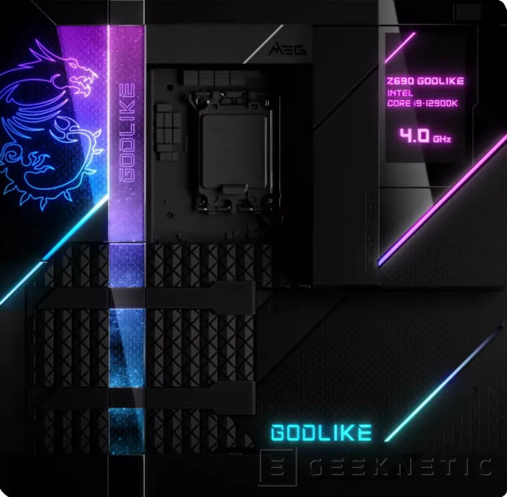
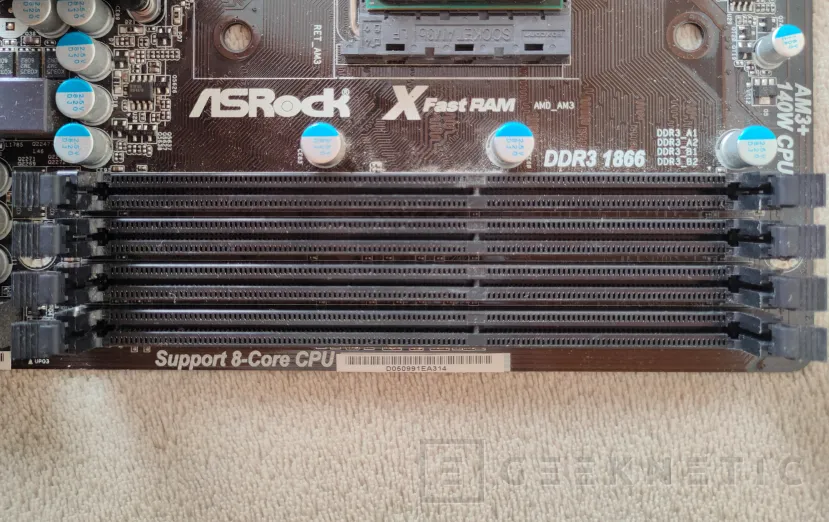
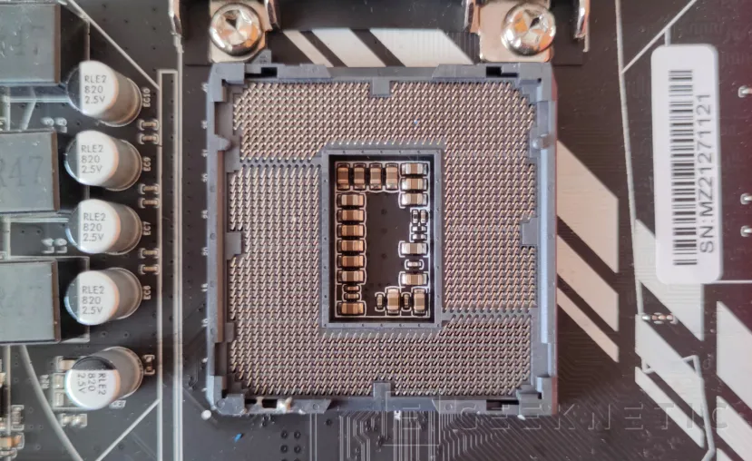
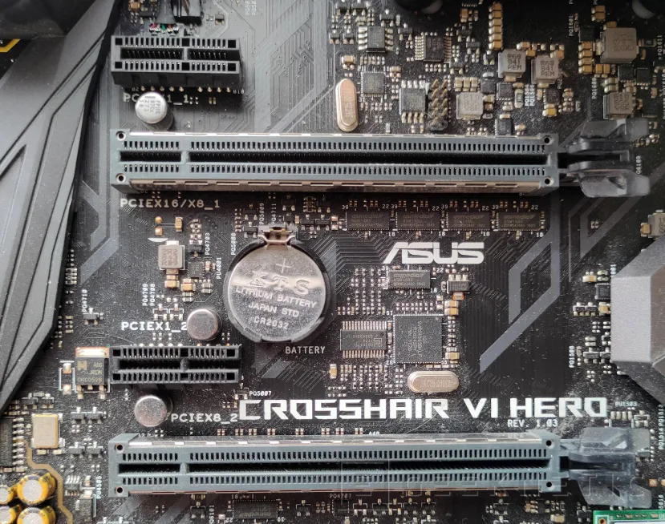

Otro punto muy visible del cambio son los paneles traseros de la placa base, que han ido cambiando desde una gran cantidad de diferentes puertos a cada vez más cantidad de USBs de mayor velocidad y sus nuevas versiones como el USB-C. Aparte, también se prioriza cada vez más la estética de las placas base, con numerosos embellecedores de plástico y efectos de iluminación que han pasado de ser exclusivos de las tope de gama a verse en casi todas las placas nuevas, y extendiéndolos en algunos casos hasta el extremo cubriendo prácticamente toda la superficie de la placa con voluminosas piezas y tiras led, como se ve en la Gigabyte TRX40 Aorus Extreme o la Z690 MEG Godlike de MSI:

Conectores de entrada: estos conectores, como su propio nombre indica, son conectores dedicados solo a la entrada de datos de un dispositivo externo al ordenador. En la actualidad la mayoría han sido sustituidos por interfaces USB, pero antes era común verlos en todas las placas como los conectores PS2, destinados a teclados y ratones que solo generaban un flujo de datos entrante en el sistema.
Conectores de salida: al contrario que los de entrada, estos se siguen viendo en muchas placas base y sirven para emitir un flujo de datos saliente del ordenador a un dispositivo externo. En este campo entrarían por ejemplo algunos conectores de audio, como los coaxiales o los ópticos, conectores para tiras led o iluminación o conectores de pantalla, ya que, aunque estos son técnicamente bidireccionales, la gran mayoría de información va de nuestra maquina al monitor y no podrá funcionar en el otro sentido, es decir, que no admitirá que metamos video entrante de otro pc por ejemplo a ese puerto.
Conectores de entrada y salida (bidireccionales): estos conectores son los más comunes hoy en día y poco a poco van sustituyendo a los demás, ya que al final son los que más versatilidad aportan al sistema permitiendo usarlos en muchos más escenarios. Estos conectores podrán enviar información y recibirla al mismo tiempo, y unos buenos ejemplos serán los puertos USB, aunque aquí también entrarían los puertos RJ-45 para el ethernet, algunos puertos de audio, los thunderbolt.

4 Slots de RAM DDR3 en una Asrock 980DE3
Aparte, no todos los slots son iguales, ya que dependiendo de la versión de RAM que sea el conector cambiará ligeramente, haciendo que por ejemplo una versión no sea compatible con placas base de diferente versión y sus módulos no entren físicamente en esos conectores, aunque hay placas base que algunas veces tienen slots de varias generaciones en ellas. Actualmente la última versión de memoria RAM es la DDR5, que intruduce un gran salto en velocidad y prestaciones como comentabamos aquí.

Socket LGA 1155 de Intel

Puertos PCIE 3.0 x1 (cortos) y x16 (alargados) en una ASUS ROG Crosshair VI Hero
Físicamente los conectores PCIe no varían entre generaciones, por lo que cualquier dispositivo con PCIe 4.0 podrá funcionar en una ranura 1.0 y viceversa, lo cual aumenta en gran medida la versatilidad de los puertos. La velocidad que alcanza cada ranura viene determinada por la cantidad de líneas que tiene asignadas y la generación de estas. La primera generación tiene un ancho de banda de 250MBytes/s, el cual se fue duplicando en cada generación hasta llegar a los 8GBytes/s por línea aproximadamente de la versión 6.0 actual